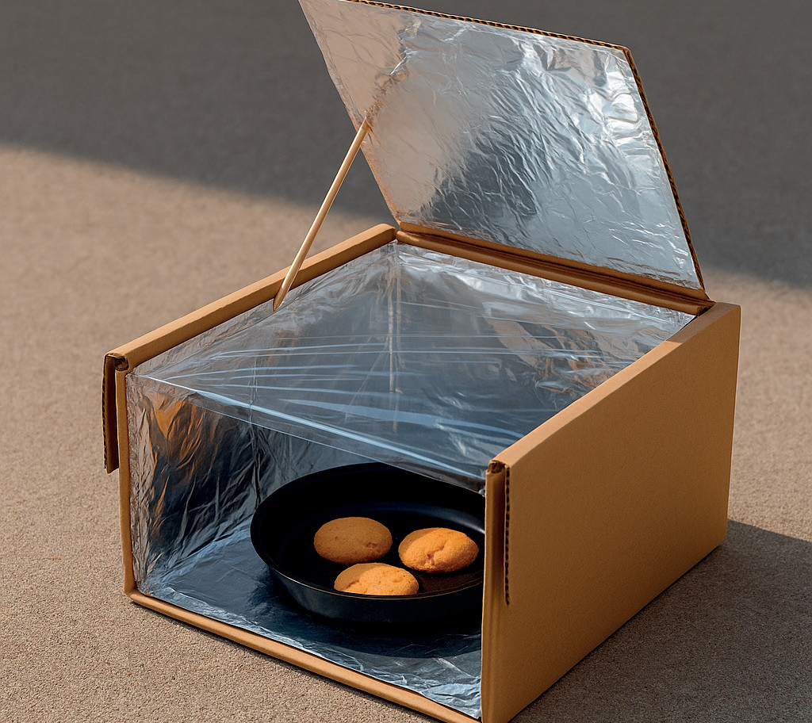

Fase 3
Conectar, construir, cambiar
Objetivo general: Diseñar e implementar propuestas comunicativas, científicas,
tecnológicas y éticas que promuevan el uso de energías asequibles y no contaminantes.
Objetivo de Biología: Diseñar e implementar un horno solar casero para promover
el uso de energías asequibles y no contaminantes. A través de este proyecto, se busca proponer soluciones
técnicas y argumentativas que impulsen su uso.
Formen grupos y lean la información.
Averigüen y contesten.
a)Ingresen al siguiente
enlace https://cal.lat/p/b9V0Yf o escaneen el código QR.
Observen el video sobre cómo construir un horno solar.
b)Creen el diseño de su horno
biosolar. Dibujen el boceto.
c)Busquen los siguientes
materiales.
Materiales:
- 1 caja de cartón mediana o grande (puede ser de zapatos o de frutas)
- Papel aluminio
- Plástico de cocina
- Cinta adhesiva o pegamento
- Tijeras o cúter
- Papel negro o una bandeja o plato de color oscuro (para absorber el calor)
- Cartón o papel periódico (para aislamiento)
- Regla y marcador
- Palito o sorbete (para mantener la tapa abierta)
- Termómetro (opcional)
- Alimento

Procedimiento:
- Formen grupos, abran y limpien la caja. Corten una ventana en la tapa
dejando un borde de 3 cm para usarla como panel reflectante.
- Forren el interior de la caja y el panel reflectante con papel aluminio para concentrar el calor
en el interior.
- Coloquen una bandeja o papel negro en el fondo de la caja para absorber la radiación solar.
- Rellenen los laterales con papel periódico o cartón para evitar la pérdida de calor.
- Cubran la abertura con papel plástico de cocina en doble capa para crear un efecto invernadero.
- Coloquen el alimento dentro, ajusten el panel reflectante con un palito y sitúen
el horno bajo el Sol directo durante 30 min a 2 horas.
Evalúen su trabajo y completen la siguiente tabla.
Realicen una demostración del horno biosolar, permitiendo que la audiencia observe su
funcionamiento, acompañada de explicaciones sobre las energías limpias y una presentación argumentada del
proyecto.